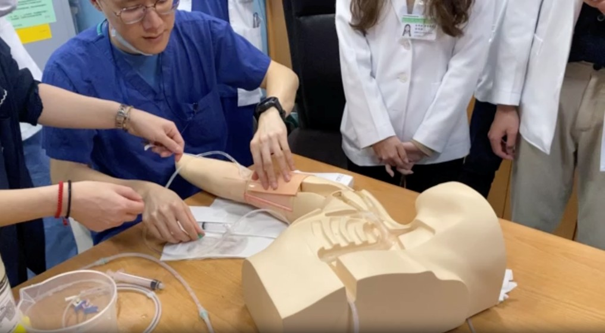
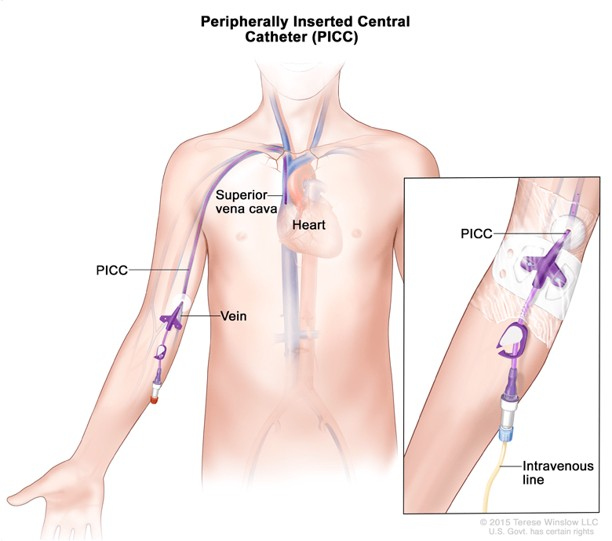

超音波導引深部引流
運用高解析度超音波，精準定位深部膿瘍、肝膿瘍、腎臟積膿等感染灶，進行經皮穿刺引流（如PTGBD、PCN等）。此技術大幅提升治療安全性與成功率，減少傳統手術風險，並能即時緩解病患症狀。中心團隊具備豐富經驗，處置成功率高，併發症低，讓病患能快速康復。
超音波導引血管通路（PICC）
利用超音波輔助，安全快速建立周邊插入中心靜脈導管（PICC），適用於長期輸液、化療或困難血管存取病患。超音波導引能降低併發症與失敗率，提升置管成功率與病患舒適度。中心醫師具備原廠認證與豐富臨床經驗，提供高品質血管通路服務。

本中心醫師皆為原廠講師，於模具上指導住院醫師 PICC 原理與置放方式。

PICC 置管完成狀態示意
超音波導引神經阻斷術
結合超音波即時影像，精準辨識神經位置，進行神經阻斷注射，有效緩解急慢性疼痛（如骨折、脫臼、慢性下背痛等）。此技術可減少藥物用量、降低副作用，並提升疼痛控制效率，讓病患在急診即可獲得舒適治療，減少住院需求。